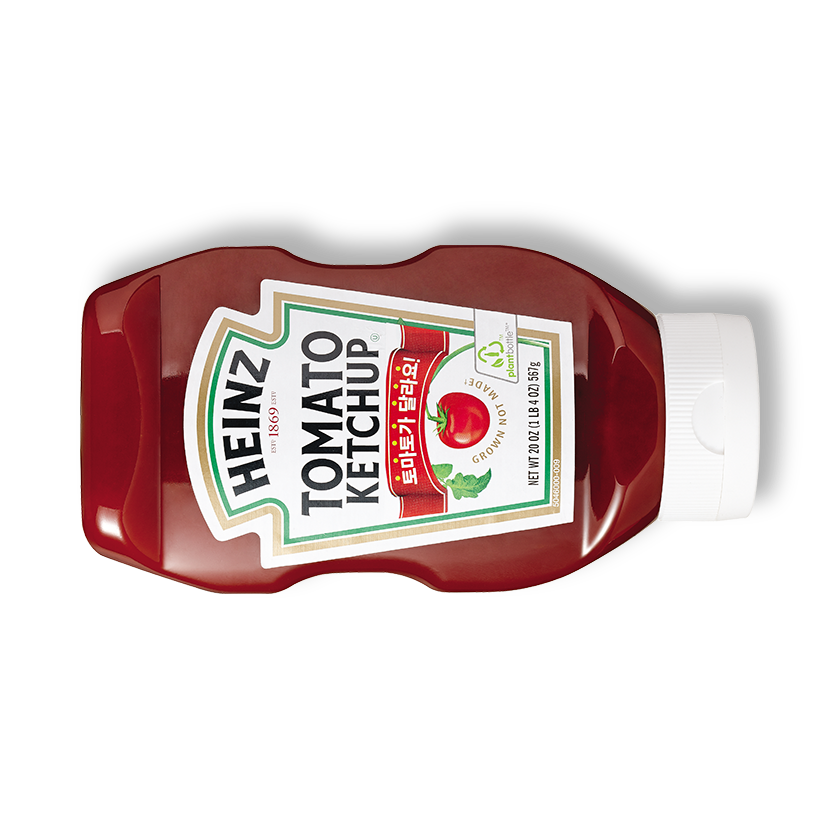

알아두면 쓸모없는 신박한 잡지식
1. 케첩과 마요네즈의 입구 모양이 다른 이유는?!
마요네즈는 점성이 높기 때문에 짜낸 뒤에도 모양을 유지할 수 있지만
케첩은 점성이 낮기 때문에 별 모양을 만들어도 곧 둥글게 뭉쳐버린다 !!
그래서 굳이 케첩은 마요네즈처럼 별모양으로 만들지 않았다고 한다 !!!!

알아두면 쓸모없는 신박한 잡지식
2. 고양이는 왜 냥냥펀치를 날릴까?!
강아지와는 서로 싸울 때 이빨로 무는 경우가 많은데
반면에 고양이들은 앞발로 전광석화 =@펀치@=를 날린다 !!
그 이유는 강아지와는 다르게 턱근육이 덜 발달되어서 이빨이 박히면 잘 빠지지 않고
재빠르게 치고 빠지기 위해 앞발로 펀치를 날린다고 한다 !!!!
고양이가 당신을 심하게 깨물었다면 그건 당신을 극혐 한다는 증거..
알아두면 쓸모없는 신박한 잡지식
3. 비행기의 창문은 왜 동그라미 모양일까?!
큰 힘에 대한 집중 응력(또는 압력)을 막기 위해-라고 한다!!!
네모네모로 했을 경우 모서리에 각각 응력이 집중되어 파괴가 일어나는
경우를 고려해 동그란 모양으로 만든다고 한다 ! !!!

알아두면 쓸모없는 신박한 잡지식
4. 새들은 왜 하얀색 응아를 쌀까?
조류들은 날아다니기 위해서 가능한 한 체중을 줄이는 방향으로 진화 했기 때문에
체내에서 생겨나는 노폐물을 그때그때 바로 배설하고 체내에 저장하지 않는다.
그 과정에서 오줌을 저장할 필요가 없으므로 방광이 없어졌으며 대장이 거의 없고,
오줌과 똥이 구분되지 않고 함께 섞여서 배설된다.
새들은 날기 위해 많은 에너지를 필요로해 대부분 육식을 하므로
체중 대비 상대적으로 많은 질소성분을 배출해야 한다.
새의 배설물에는 요산이라는 독성이 있는데
이것은 결정화가 되면 흰색 가루가 된다고 한다 !! !!!
따라서 새똥이 흰색인 이유는 바로 새똥에는 요산이 많이 들어있기 때문이다 !!